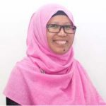
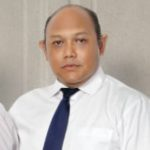
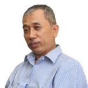
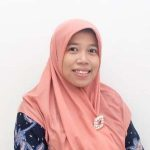
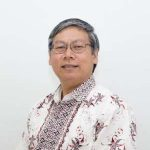

Struktur Organisasi di Lingkungan Program Studi Teknik Pertanian

Kepala Departemen Teknik Pertanian dan Biosistem
Prof. Chay Asdak, M.Sc., PhD
Ketua Program Studi Teknik Pertanian

Dr. Sophia Dwiratna N.P., M.T.
Kepala Lab. Teknik Tanah dan Air

Dr. Boy Macklin Pareira P., S.T., M.Si.
Kepala Lab. Alat dan Mesin Pertanian

Ir. Mimin Muhaemin, M.Eng., Ph.D
Kepala Lab. Pascapanen dan Teknologi Proses

Asri Widyasanti, STP., M.Eng
Kepala Lab. Sistem dan Manajemen Mekanisasi Pertanian

Handarto, STP., M.Agr., Ph.D